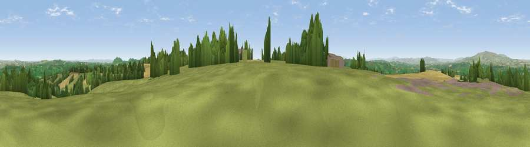

Viewpoint near Upper Sapey
#6184 in England · top 14% of its area beats it · near Upper SapeyWhere it is
The exact computed spot (SO 66362 65662). Click the marker for map links.
The view, rendered

A 360° render of this exact spot computed from the terrain model, tree cover and land cover — summer colours, afternoon light, calibrated against photographs of famous viewpoints. Real trees, hedges and buildings will differ in detail.
The panorama
Grey silhouette: terrain skyline in each direction (720 bearings, Earth curvature and refraction included). Dashed green: skyline with trees (+15 m) and buildings (+8 m) as obstacles. Blue strip: how far the ground is visible on each bearing.
Where the view opens
Wedge length = distance to the farthest visible ground on that bearing (vegetation-aware). Rings at 10, 25 and 50 km.
What fills the view
45% grassland · 32% cropland · 22% woodland ·
Angular shares of the visible panorama (visual magnitude), not map area. Landscape diversity 0.48 (0–1 Shannon).
Key numbers
More beautiful places nearby
The staircase of upgrades: each row has a higher view potential than everything closer. Driving times are estimates from straight-line distance, calibrated against real road routing — check an actual route before setting out.
| Place | Direction | Drive | Score |
|---|---|---|---|
| Viewpoint near Upper Rochford | WNW · 1 km | ~2 min | 71.0 |
| Walsgrove Hill | E · 8 km | ~16 min | 79.6 |
| Woodbury Hill | E · 8 km | ~17 min | 81.6 |
| Viewpoint near Great Witley | E · 9 km | ~17 min | 83.4 |
| Titterstone Clee | NNW · 14 km | ~26 min | 83.8 |
| North Hill | SSE · 22 km | ~37 min | 86.8 |
| Worcestershire Beacon | SSE · 23 km | ~38 min | 87.1 |
| Viewpoint near West Quantoxhead | SSW · 134 km | ~158 min | 87.9 |
52.28806, -2.49456 · source: screening · position refined by local search. Computed location — check access rights before visiting.